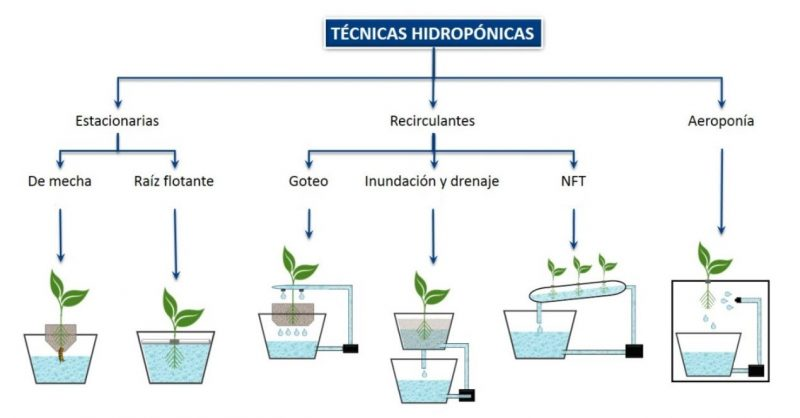

Somos HidroponiKatz una startup Argentina y te contamos que estamos trabajando en un futuro para vos. Con todas las comodidades que la tecnología te puede otorgar. Los cultivos hidropónicos nos permiten cultivar en la ausencia de suelo fértil, dando origen a los cultivos urbanos. Si bien la hidroponia es una técnica milenaria, viene a revolucionar el presente.


¿QUE ES LA HIDROPONIA?
La hidroponía es un sistema de cultivo que hace crecer las plantas en una solución de agua con nutrientes, es decir, prescinde de la tierra. Además, el agua utilizada puede ser recuperada y reciclada, y los nutrientes que son una combinación precisa de diferentes tipos de sales minerales diluidas en agua, conformando la “solución nutritiva”, y reemplazando al abastecimiento nutricional que otorga la tierra en el sistema de cultivo convencional. La solución nutritiva se aplica directamente a las raíces. El modo de hacerlo dependerá del método de cultivo hidropónico que se adopte. Existen diversos métodos para este tipo de cultivos, pero todos se ajustan a un principio esencial que consiste en el cultivo de plantas sin tierra y sin materia orgánica. El sistema de cultivo hidropónico es aplicable a cualquier tipo de plantas, tanto para consumo como ornamentales, y puede practicarse en espacios grandes o pequeños, abiertos, cerrados, en forma horizontal, vertical, escalonada.
Ventajas y desventajas de la hidroponia
Ventajas:
Mayor rendimiento: producen entre tres y diez veces más cantidad de alimentos que la agricultura convencional en el mismo espacio. Además, las plantas crecen en la mitad de tiempo.
No necesita ni herbicidas ni pesticidas: están a salvo de malas hierbas e insectos, lo que hace innecesario el uso de estos productos.
Menor consumo de agua: consume 20 veces menos agua que la agricultura convencional, ya que el agua recircula y se reutiliza.
Menor contaminación: al ser un sistema cerrado, no se produce ni contaminación del agua ni del suelo con los residuos de fertilizantes o pesticidas.
Adaptación a condiciones extremas: permite cultivar plantas en entornos hostiles, con suelos pobres o meteorología extrema.
Desventajas:
.png)
El coste inicial de la instalación de los cultivos hidropónicos es mayor que el de la agricultura convencional.
Los microorganismos, como bacterias y mohos, pueden contaminar el agua y producir enfermedades que atacan a las plantas. Además, sin la tierra como barrera, dichas enfermedades pueden extenderse rápidamente a todo el sistema a través del agua.
Es necesario un control y una monitorización constante, tanto de los niveles de nutrientes como del riego y la iluminación con el uso de sensores y sistemas informáticos que requieren de conocimientos técnicos.
Cultivos Hidroponicos y tipos de plantas
.png)
Verduras: judía verde, coliflor, col, apio, brócoli, lechuga, guisante, puerro, espinaca.
.png)
Hortalizas: zanahoria, remolacha, pepino, berenjena, cebolla, pimiento, rábano, calabacín, tomate.
Frutas: melón cantalupo, fresa, frambuesa, arándano, uva e, incluso, frutos de árbol como limón o manzana empleando árboles enanos.
.png)
Plantas aromáticas: albahaca, cilantro, menta, tomillo, salvia, estragón, romero.
Consejos para una hidroponia casera
Tener un pequeño jardín hidropónico en casa es relativamente económico y sencillo. En las siguientes líneas ofrecemos algunos consejos para montar nuestro propio huerto urbano hidropónico:
Se requiere un contenedor de plástico de unos 30 cm de profundidad y una bandeja de 10 cm que encaje sobre él con un agujero de drenaje.
Se coloca una bomba de acuario en el fondo del contenedor, con el tubo de salida colocado para que bombee el agua con nutrientes a la bandeja superior.
Las pantas se colocan en pequeños contenedores de plástico sobre un sustrato de fibra de coco o lana de roca.
El contenedor se llena de agua con nutrientes, que habrá que remplazar cada semana aproximadamente.
Toda la instalación se coloca en un lugar soleado o bien bajo lámparas de crecimiento.
